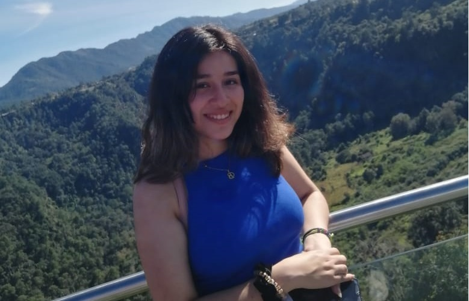
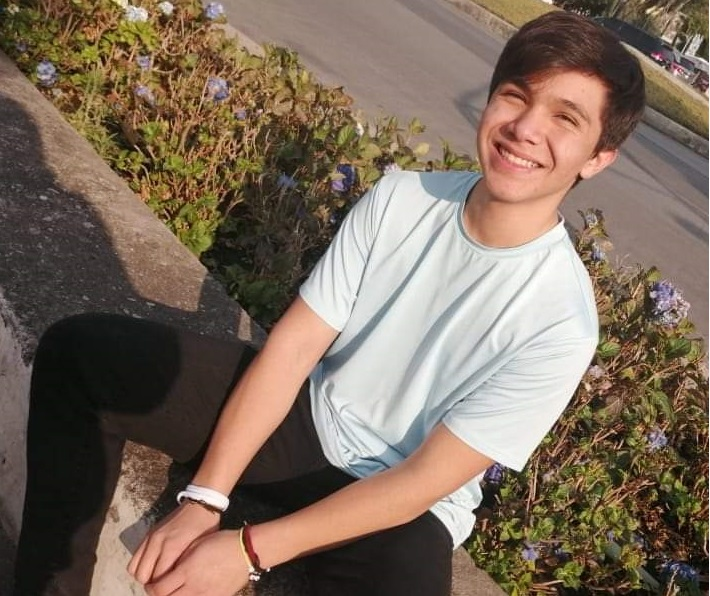
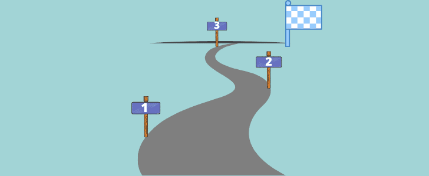

Inicio
El inicio de esta relación se da el 27 de julio del 2019, empezando a hablar, dos meses después de esto, el 26 de septiembre del 2019, formalizan la relación, miles de cosas han pasado desde esto, en esta página veremos algunas de ellas y algunos datos sobre los protagonistas de esta historia.
Valeria Berenice Galindo Flores
Yániz Sánchez Diego Nathán
Historia
A la fecha estos llevan 1 año y 6 meses juntos, han pasado juntos año nuevo, navidad, San Valentin y hasta semana santa. Han salido a lugares como Puebla y la mayoria de plazas, parques y museos de la Ciudad de México. Es el inicio de todo, ya que esperan que dure mucho tiempo más.
Se hacen feliz el uno al otro
Metas
Viajes
Se planea el poder viajar por toda la república mexicana y al extranjero juntos.
Mascotas
En un futuro quieren tener varias mascotas, entre ellas un cerdo llamado Eutanacio.

Duración
Esperan durar bastante tiempo más juntos, ya que se sienten muy bien el uno con el otro y se aman :).